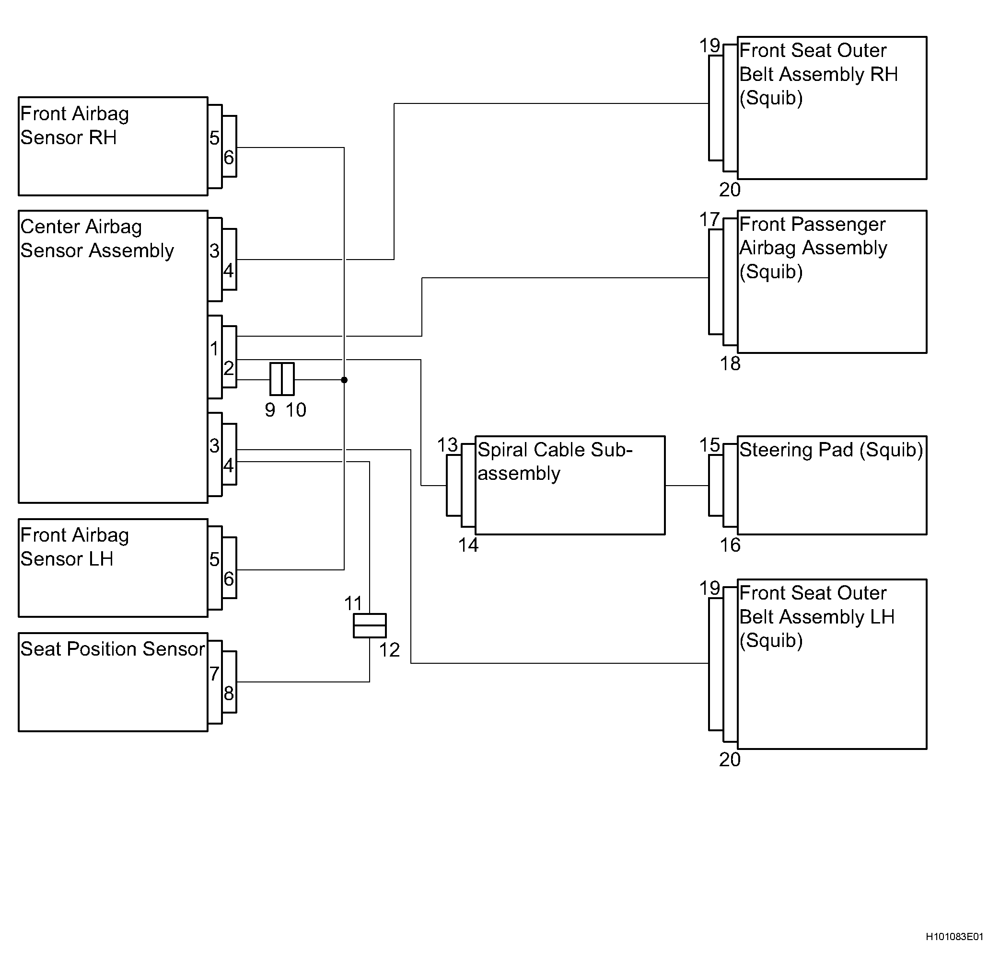

System Diagram (2005/07-2005/12)
- RELEASE METHOD OF ACTIVATION PREVENTION MECHANISM
- The activation prevention mechanism is built into the connector for the squib circuit of the SRS. As explained in the troubleshooting section, insert a piece of paper that is the same thickness as the male terminal between the terminal and the short spring to release it (refer to illustration).CAUTION: Never release the activation prevention mechanism on the squib connector.NOTE:
- Do not release the activation prevention mechanism unless specially directed by the troubleshooting procedure.
- To prevent the terminal and short spring from becoming damaged, always use a piece of paper that is the same thickness as the male terminals.
- The activation prevention mechanism is built into the connector for the squib circuit of the SRS. As explained in the troubleshooting section, insert a piece of paper that is the same thickness as the male terminal between the terminal and the short spring to release it (refer to illustration).

Courtesy of © TOYOTA, LICENSE AGREEMENT TMS1002